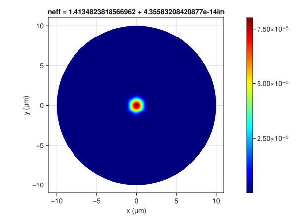

OpticalFibers.ModeSolvers - Tutorial
Bimodal Step-index Fiber
This section explains how to modelize a step-index fiber with a core radius $a=2$ µm. The refractive index of the core is $n_{\text{core}}=1.47$ and that of the cladding is $n_{\text{cladding}}=1.45$.
This fiber is bimodal at $\lambda=1$ µm since the normalized frequency is $V=\frac{2\pi a}{\lambda}\sqrt{n_{\text{core}}^2-n_{\text{cladding}}^2}=3.04$.
To compute the two modes, we can use the fuction multi_step_fiber_modes that returns a vector of modes:
using OpticalFibers
using OpticalFibers.ModeSolvers
m0=multi_step_fiber_modes(1,0,2,[1.47,1.45],maxPosition=10);
m01=m0[1]
m1=multi_step_fiber_modes(1,1,2,[1.47,1.45],maxPosition=10);
m11=m1[1]Note that you can also use broadcasting to compute all modes with a single command:
m=multi_step_fiber_modes.(1,[0,1],2,Ref([1.47,1.45]),maxPosition=10);
m01=m[1][1];
m11=m[2][1];It is possible to plot the mode profile:
using Plots
plot(m01.r,m01.E,label=m01.Name)
plot!(m11.r,m11.E,label=m11.Name)
In order to visualize the modes in a 2D plot, one should use the conversion from ScalarMode1D to ScalarMode2D. Be careful when using Plots.jl: unlike this package, the second index of the matrix corresponds to the x-coordinate (as matlab but the opposite of Makie.jl).
mm01=ScalarMode2D(m01);
mm11s=ScalarMode2D(m11,sincos='s');
mm11c=ScalarMode2D(m11,sincos='c');
contourf(mm11c.x,mm11c.y,mm11c.E',levels=100,linewidth=0)
To observe the beating between the LP01 and the LP11, the modes must be first normalized. Then, the addition of the two fields at the distance z ∈ [0,214] µm is required. The beating length is $\frac{2\pi}{\vert \Delta \beta \vert} = \frac{\lambda}{\vert \Delta n_{eff} \vert}= 107$ µm
normalize!(mm01)
normalize!(mm11c)
normalize!(mm11s)
L=1/(m01.neff-m11.neff)106.89413338381357anim=@animate for j=0:214
TotalField=ScalarField(mm01,j)+ScalarField(mm11c,j);
contourf(TotalField.x,TotalField.y,abs2.(TotalField.E'),levels=100,linewidth=0)
title!("z = $j µm");
end;
gif(anim,"anim_field.gif",fps=15)
It is also possible to compute the vector modes of the fiber: LP$_{01}$ mode becomes HE$_{11}$ mode and LP$_{11}$ mode becomes TE$_{01}$, TM$_{01}$ and HE$_{21}$ modes:
mv0=multi_step_fiber_modes(1,0,2,[1.47,1.45],maxPosition=10,type=:Vector)2-element Vector{OpticalFibers.ModeSolvers.VectorMode}:
["TE 0,1",1.4538242972550153,1.0,[-10.0,10.0],[-10.0,10.0],[0.0,6423.6614554249545],[0.0,6423.6614554249545],[0.0,0.0],[0.0,24.789284967112515],[0.0,24.789284967112515],[0.00012875788049931844,6.377844605026284]]
["TM 0,1",1.4537675924414297,1.0,[-10.0,10.0],[-10.0,10.0],[0.0,24.42836657241584],[0.0,24.42836657241584],[0.00013675448062861948,6.295547609080464],[0.0,0.09638368964539565],[0.0,0.09638368964539565],[0.0,0.0]]mv1=multi_step_fiber_modes(1,1,2,[1.47,1.45],maxPosition=10,type=:Vector)2-element Vector{OpticalFibers.ModeSolvers.VectorMode}:
["HE 1,1b",1.4631371608572663,1.0,[-10.0,10.0],[-10.0,10.0],[8.057716514469458e-7,17.659086281383395],[0.0,0.058526627904333495],[0.0,0.9951907653396004],[0.0,0.00019811180383880883],[3.1013310034567737e-9,0.06890799118005245],[0.0,0.0038278584364929836]]
["HE 1,1a",1.4631371608572663,1.0,[-10.0,10.0],[-10.0,10.0],[0.0,0.058526627904333495],[8.057716514469458e-7,17.65908628138339],[0.0,0.9951907653396004],[3.1013310034567737e-9,0.06890799118005245],[0.0,0.00019811180383880883],[0.0,0.0038278584364929836]]mv2=multi_step_fiber_modes(1,2,2,[1.47,1.45],maxPosition=10,type=:Vector)2-element Vector{OpticalFibers.ModeSolvers.VectorMode}:
["HE 2,1b",1.4537386807206427,1.0,[-10.0,10.0],[-10.0,10.0],[0.0,8.179144249930044],[0.0,8.179144249930044],[0.0,0.9771916358220737],[0.0,0.03185727422052806],[0.0,0.03185727422052806],[0.0,0.0038464075287345184]]
["HE 2,1a",1.4537386807206427,1.0,[-10.0,10.0],[-10.0,10.0],[0.0,8.183586213971765],[0.0,8.183586213971765],[0.0,0.9999752349350604],[0.0,0.03199511348865891],[0.0,0.03199511348865891],[0.0,0.0037587703512342654]]Then, the Poynting Vector of the mode HE$_{21}$ can be computed and plotted:
Px,Py,Pz=PoyntingVector(mv2[1]);
contourf(mv2[1].x,mv2[1].y,Pz',linewidth=0,levels=100,xlims=(-4,4),ylims=(-4,4))
X,Y=meshgrid(mv2[1].x,mv2[1].y);
quiver!(X[5:5:end,5:5:end],Y[5:5:end,5:5:end],quiver=(mv2[1].Ex[5:5:end,5:5:end]'/20,mv2[1].Ey[5:5:end,5:5:end]'/20),color=:cyan,arrow=arrow(:closed))
In order to check the orthoganality of the modes, we can normalize them and compute the overlap integrals:
mv=[mv0;mv1;mv2];
normalize!.(mv);
overlap.(mv,transpose(mv))6×6 Matrix{Float64}:
1.0 4.63133e-19 1.57427e-17 … -2.58123e-18 -4.71317e-17
-4.63382e-19 1.0 -8.98729e-17 6.45827e-17 -4.35753e-18
-2.52165e-19 -8.30757e-17 1.0 9.494e-17 5.69264e-18
-4.61124e-17 -5.7172e-18 -4.96938e-19 1.11981e-17 -4.14427e-17
-2.22809e-18 -9.38509e-18 2.16632e-17 1.0 2.08712e-19
6.96282e-17 -5.02604e-18 -5.97523e-19 … -7.89018e-19 1.0Gradient index fiber
In this tutorial, a germanium-doped parabolic gradient index fiber will be studied. The maximum Ge concentration is 20% and the core radius is 3.5 µm. The silica dispersion will be taken into account.
First, a vector of Function is created to modelized the dispersive refractive index profile between 1 and 1.5 µm:
using OpticalFibers
using OpticalFibers.PhysicalData
using Plots
lambda=1:0.01:1.5;
f=[r->n_Ge_Doped_Silica(l*1e-6,0)+(n_Ge_Doped_Silica(l*1e-6,0.2)-n_Ge_Doped_Silica(l*1e-6,0))*(r<=3.5)*(1-r^2/3.5^2) for l in lambda];
r=0:0.1:5;
plot(r,f[1].(r),label="λ = 1 µm",xlabel="r (µm)",ylabel="Refractive index");
plot!(r,f[end].(r),label="λ = 1.5 µm")
The modal content is then computed:
using OpticalFibers.ModeSolvers
m=FD.(lambda,[0,1,2]',2,f,1000,10);
#mode LP01 always exists
neff01=[m[j,1][1].neff for j in 1:length(lambda)];
N02=sum((length.(m[:,1])).>=2);
neff02=[m[j,1][2].neff for j in 1:N02];
N11=sum((length.(m[:,2])).>=1);
neff11=[m[j,2][1].neff for j in 1:N11];
N21=sum((length.(m[:,3])).>=1);
neff21=[m[j,3][1].neff for j in 1:N21];
plot(lambda,n_Ge_Doped_Silica.(lambda*1E-6,0),label="Silica",xlabel="λ (µm)",ylabel="Effective index",color=:black);
plot!(lambda,n_Ge_Doped_Silica.(lambda*1E-6,0.2),label="Ge-doped Silica (20%)",color=:black,line=:dash);
plot!([lambda,lambda[1:N11],lambda[1:N02],lambda[1:N21]],[neff01,neff11,neff02,neff21],label=["LP01" "LP11" "LP02" "LP21"])
The second-order dispersion is defined by $\beta_2=\frac{\partial^2 \beta}{\partial \omega^2}$.
beta01=neff01*2*pi./lambda*1E6;
omega=2*pi*OpticalFibers.PhysicalData.c./lambda*1E6;
omega2,beta2=derivative((omega,beta01),2);
lambda2=2*pi*OpticalFibers.PhysicalData.c./omega2*1E6;
plot(lambda2,beta2*1E26,xlabel="λ (µm)",ylabel="β₂ (10⁻²⁶ s²/m)")
To compute the effective area and the non-linear coefficient, the fields must be calculated:
m=FD.(lambda,0,1,f,1000,10,field=true);
m=[m[i][1] for i in 1:length(lambda)];
A=Aeff.(m);
gamma=nonLinearCoefficient.(m,2.53E-20)*1E21;
plot(lambda,A,label="Aeff",ylabel="Effective area (µm²)",xlabel="λ (µm)",color=:blue,leg=:topright);
plot!(twinx(),lambda,gamma,label="γ",ylabel="Non-linear coefficient ((W.km)⁻¹)",color=:red,leg=:topleft)
FEM: Step-index fiber
As an example, we will compute the five first vector modes in a step-index fiber with a 1 µm-core radius, a refractive index of $\sqrt{3}$ in the core and 1 in the cladding. The mesh was generated with GMSH.
using OpticalFibers
using OpticalFibers.ModeSolvers
using Gridap
using GridapGmsh
using GridapMakie
using GLMakie
model = GmshDiscreteModel("../../models/Step_index_fiber.msh");
permittivity=x->1+2*(x[1]^2+x[2]^2<=1);
m=FEM(1,5,permittivity,model,sqrt(3),order=2,solver=:MUMPS,field=true,type=:Vector);
fig,ax,plot_obj=wireframe(m[1].Ω, color=:black, linewidth=2,axis=(aspect=DataAspect(),))
ax.xlabel="x (µm)";
ax.ylabel="y (µm)";Info : Reading '../../models/Step_index_fiber.msh'...
Info : 7 entities
Info : 5178 nodes
Info : 10454 elements
Info : Done reading '../../models/Step_index_fiber.msh'
Now we can plot the z-component of the Poynting Vector with the package GridapMakie.jl (it is also possible to save the field in a vtk file with the funcion writevtk implemented in Gridap.jl and open it with ParaView):
Px,Py,Pz=PoyntingVector(m[1]);
fig,ax,plot_obj=GLMakie.plot(m[1].Ω,Pz,axis=(aspect=DataAspect(),),colormap=:jet)
ax.xlabel="x (µm)";
ax.ylabel="y (µm)";
ax.title="neff = $(real(m[1].neff))";
Colorbar(fig[1,2], plot_obj);
Leaky modes in step index fiber with a low index trench
In this example, we study a fiber with the parameters below:
- core with a radius of 4 µm and a refractive index of 1.46
- a trench located between 4 µm and 7 µm with a refractive index of 1.41
- a cladding with a refractive index of 1.45
In order to compute the leaky scalar modes at $\lambda=1.6$ µm, a PML must be added when using the 1-dimensional FD solver. The PML will be located between 12 µm and 15 µm.
using OpticalFibers
using OpticalFibers.ModeSolvers
f=r->1.46-0.05*(r<=7)*(r>=4)-0.01*(r>7);
m0=FD(1.6,0,10,f,1000,15,field=true,rPML=12)10-element Vector{OpticalFibers.ModeSolvers.ScalarMode1D}:
["LP - ℓ=0 - mode 1",1.4541275200015011 - 3.0612847211108235e-10im,1.6,0,[0.0,15.0],[1.2158554570008087e-6,0.08223100114087857]]
["LP - ℓ=0 - mode 2",1.4501373593537188 - 0.0011228765326362277im,1.6,0,[0.0,15.0],[8.582955321635607e-5,0.06212733786278288]]
["LP - ℓ=0 - mode 3",1.4509918101445345 - 0.004676410456531937im,1.6,0,[0.0,15.0],[0.0001796257707576037,0.07289870728172958]]
["LP - ℓ=0 - mode 4",1.4536668158731394 - 0.013322735788541897im,1.6,0,[0.0,15.0],[4.422147430513367e-5,0.08840337628196542]]
["LP - ℓ=0 - mode 5",1.4491364875431956 - 0.012669319291743624im,1.6,0,[0.0,15.0],[0.00010866610045382322,0.0849585716700037]]
["LP - ℓ=0 - mode 6",1.4626515857561284 - 0.02411901670883042im,1.6,0,[0.0,15.0],[1.6100410567031685e-6,0.09860627819917317]]
["LP - ℓ=0 - mode 7",1.429895910247082 - 3.8037961782829047e-5im,1.6,0,[0.0,15.0],[4.002530436491718e-8,0.11089271188749458]]
["LP - ℓ=0 - mode 8",1.4750302299823312 - 0.03689473074360324im,1.6,0,[0.0,15.0],[4.526339878536927e-8,0.10554635657737957]]
["LP - ℓ=0 - mode 9",1.4321915921204398 - 0.02964845152566257im,1.6,0,[0.0,15.0],[3.587032257272174e-6,0.09396032736598095]]
["LP - ℓ=0 - mode 10",1.4912962978621942 - 0.051527442488204865im,1.6,0,[0.0,15.0],[1.1335356147783201e-9,0.11100627914696418]]The LP01 mode is the mode 1. Since its effective index is greater than the refractive index of the cladding, this mode is guided and its losses are not significant.
The LP02 mode is the mode 7, its losses in dB/km can be calculated:
losses(m0[7])*1e61.2974523901207896e6using Plots
plot(m0[1].r,-real.(m0[1].E),xlabel="r (µm)",ylabel="real(E)",label="LP01")
plot!(m0[7].r,-real.(m0[7].E),label="LP02")
We can also compute the effective index of the LP11 mode:
m1=FD(1.6,1,10,f,1000,15,field=true,rPML=12)
pos=argmin(losses.(m1)*1E6);
m1[pos].neff1.4452235104934343 - 2.3339462583295887e-6imTo compute the leaky vector modes that correspond to the LP11 mode, we can add a PML for the FEM solver:
using Gridap
using GridapGmsh
model = GmshDiscreteModel("../../models/Step_index_fiber_pml.msh");
permittivity=x->f(hypot(x[1],x[2]))^2;
epsilon=add_cylindrical_PML(permittivity,12,3,10);
mu=add_cylindrical_PML(x->1.0,12,3,10);
m=FEM(1.6,4,epsilon,mu,model,real(m1[pos].neff),field=true,order=2,solver=:MUMPS)4-element Vector{OpticalFibers.ModeSolvers.VectorModeFEM}:
[Mode 1,1.445200657509651 - 2.375526799223427e-6im,1.6,yes]
[Mode 2,1.4450417028836748 - 2.377080667967091e-6im,1.6,yes]
[Mode 3,1.4450417028245284 - 2.3770806385882935e-6im,1.6,yes]
[Mode 4,1.4449793146581011 - 2.351222270804991e-6im,1.6,yes]The field can be plotted using GridapMakie or saved (using the function 'writevtk') to a file that can be opened with ParaView.
using GridapMakie
using GLMakie
fig,ax,plot_obj=GLMakie.plot(m[end].Ω,real(m[1].Ex),axis=(aspect=DataAspect(),),colormap=:jet)
Colorbar(fig[1,2], plot_obj);
FEM: Photonic Crystal Fiber
In a PCF, the modes are not guided modes but leaky modes so that the computation requires a PML. The fiber is constituted of three rings of air hole (n=1) inserted in silica (n=1.45). The pitch is 2 µm, the hole diameter is 1.5 µm and the PML begins at 8 µm from the fiber center and its thickness is 2 µm.

First, the mesh is loaded:
using OpticalFibers
using OpticalFibers.ModeSolvers
using Gridap
using GridapGmsh
using GridapMakie
using GLMakie
model = GmshDiscreteModel("../../models/PCF.msh");UnstructuredDiscreteModel()Then we define the permittivity function and add a PML to obtain the final permittivity and permeability tensors:
function eps_PCF(x)
Pitch=2;
r_hole=0.75;
x1,y1=ring(1);
x2,y2=ring(2);
x3,y3=ring(3);
xc=[x1;x2;x3]*Pitch;
yc=[y1;y2;y3]*Pitch;
for i=1:length(xc)
rc=hypot(x[1]-xc[i],x[2]-yc[i]);
if rc<r_hole
return 1.0;
end
end
return 1.45^2;
end
epsilon=add_cylindrical_PML(eps_PCF,8,2,10);
mu=add_cylindrical_PML(x->1.0,8,2,10);tensor3(OpticalFibers.var"#pml_xx#40"{Main.var"#1#2", Int64, Int64, Int64}(Main.var"#1#2"(), 8, 2, 10), OpticalFibers.var"#pml_xy#43"{Main.var"#1#2", Int64, Int64, Int64}(Main.var"#1#2"(), 8, 2, 10), OpticalFibers.var"#zf#44"(), OpticalFibers.var"#pml_xy#43"{Main.var"#1#2", Int64, Int64, Int64}(Main.var"#1#2"(), 8, 2, 10), OpticalFibers.var"#pml_yy#41"{Main.var"#1#2", Int64, Int64, Int64}(Main.var"#1#2"(), 8, 2, 10), OpticalFibers.var"#zf#44"(), OpticalFibers.var"#zf#44"(), OpticalFibers.var"#zf#44"(), OpticalFibers.var"#pml_zz#42"{Main.var"#1#2", Int64, Int64, Int64}(Main.var"#1#2"(), 8, 2, 10))Then we can compute ten modes whose effective indices are close to the approximate value calculated for the fundamental mode at the wavelength of 1.3 µm:
neff_approx=approx_neff_PCF(1.3,1.5,2);
m=FEM(1.3,10,epsilon,mu,model,neff_approx,field=true,order=2,solver=:MUMPS)10-element Vector{OpticalFibers.ModeSolvers.VectorModeFEM}:
[Mode 1,1.4224235276324437 - 0.02282658885887404im,1.3,yes]
[Mode 2,1.422646358883874 - 0.022748925822529863im,1.3,yes]
[Mode 3,1.4228688953469115 - 0.022504192474910197im,1.3,yes]
[Mode 4,1.4228719980417501 - 0.02250363648884228im,1.3,yes]
[Mode 5,1.4288548628513194 - 0.019655111771513727im,1.3,yes]
[Mode 6,1.4287878999964918 - 0.01950714145630964im,1.3,yes]
[Mode 7,1.4287883247324005 - 0.01950659185061394im,1.3,yes]
[Mode 8,1.4292043041127571 - 0.018908437349998048im,1.3,yes]
[Mode 9,1.4134836231922907 - 4.346077578897855e-14im,1.3,yes]
[Mode 10,1.4134823818567004 - 4.355971503581387e-14im,1.3,yes]The last two modes are fundamental modes. We can compute and plot the z-component of the Poynting vector of the last mode:
Px,Py,Pz=PoyntingVector(m[end]);
fig,ax,plot_obj=GLMakie.plot(m[end].Ω,Pz,axis=(aspect=DataAspect(),),colormap=:jet)
ax.xlabel="x (µm)";
ax.ylabel="y (µm)";
ax.title="neff = $(m[end].neff)";
Colorbar(fig[1,2], plot_obj);